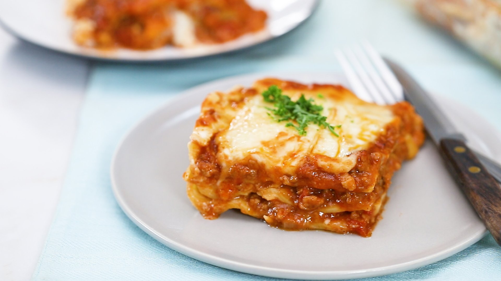

Lasagna

Description
Lasagna is a classic Italian dish made with layers of pasta, rich meat sauce, creamy béchamel sauce, and melted cheese.
It's a comforting and hearty meal that's perfect for family gatherings or special occasions.
- 12 lasagna noodles
- 1 pound ground beef
- 1/2 pound Italian sausage
- 1 onion, chopped
- 3 cloves garlic, minced
- 1 (28-ounce) can crushed tomatoes
- 2 (6-ounce) cans tomato paste
- 2 (6.5-ounce) cans tomato sauce
- 1/2 cup water
- 2 tablespoons white sugar
- 2 teaspoons dried basil leaves
- 2 tablespoons chopped fresh parsley
- 1 teaspoon salt
- 1/4 teaspoon ground black pepper
- 4 cups ricotta cheese
- 1 egg
- 3 cups shredded mozzarella cheese
- 3/4 cup grated Parmesan cheese
Steps
- Cook the lasagna noodles in boiling water until al dente. Drain and set aside.
- In a large skillet, brown the ground beef and Italian sausage over medium heat. Add chopped onion and garlic, and cook until the meat is no longer pink. Drain excess fat.
- Stir in crushed tomatoes, tomato paste, tomato sauce, and water. Add sugar, basil, parsley, salt, and pepper. Simmer, covered, for about 30 minutes, stirring occasionally.
- In a mixing bowl, combine ricotta cheese with egg and mix well.
- Preheat your oven to 375°F (190°C).
- To assemble the lasagna, spread a layer of meat sauce at the bottom of a 9x13-inch baking dish. Place three lasagna noodles on top. Spread a third of the ricotta cheese mixture over the noodles. Sprinkle with mozzarella and Parmesan cheese. Repeat the layers.
- Cover with aluminum foil and bake in the preheated oven for 25 minutes. Remove the foil and bake for an additional 25 minutes until bubbly and golden.
- Let it cool for a few minutes before serving. Enjoy your delicious homemade lasagna!
Return to Top | Return to Main Menu